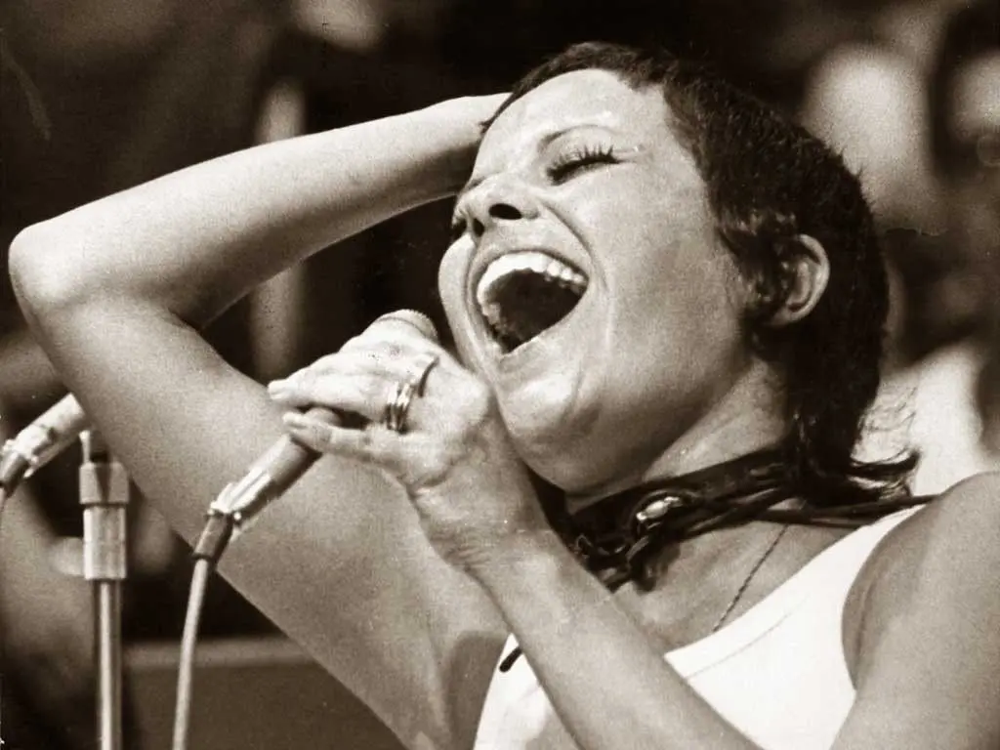
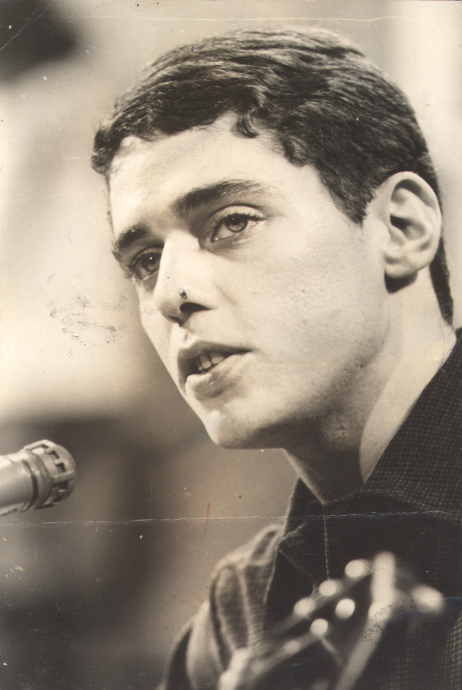

A Voz Silenciada: Imprensa na Ditadura Militar
“Escrever era um ato de coragem.”
Durante os anos de repressão no Brasil (1964-1985), jornalistas enfrentaram censura severa. Manchetes eram trocadas por receitas ou poemas, e redações viviam sob constante vigilância.
Artistas que não se calaram

Elis Regina: “Eu não sou artista para agradar, eu sou artista para cantar. E para cantar a verdade.”

Rita Lee: “Censura não cala quem canta com alma.”

Chico Buarque: “Apesar de você, amanhã há de ser outro dia.”